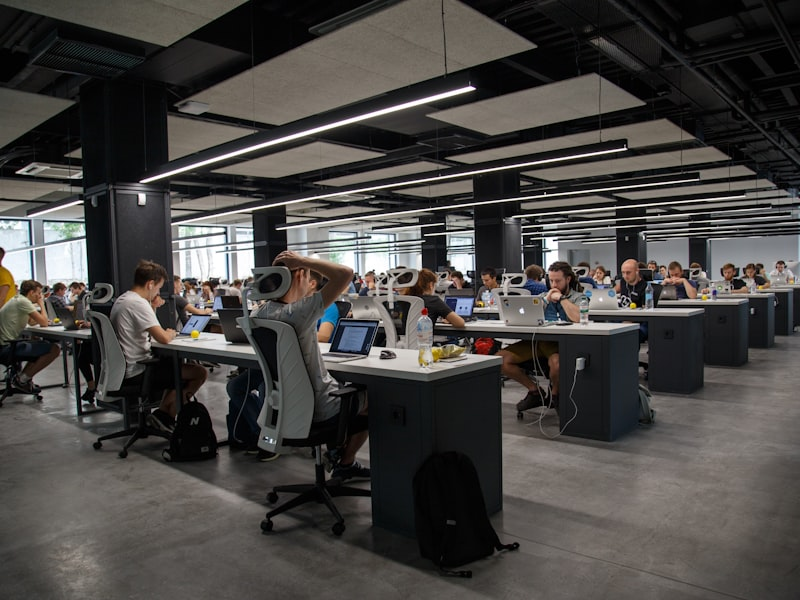
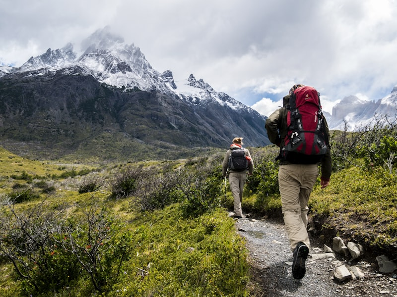

About Me
Who I am, what I do, and what drives me
Building the Future, One Line of Code at a Time
I'm a Computer Science student at the University of Queensland with a deep passion for software engineering, AI, and building things that make a real difference. When I'm not coding, you'll find me making music, exploring the outdoors, or planning my next adventure.


My Story
My journey into software engineering began when I was 14, building simple games in Python during school holidays. What started as a curiosity quickly became an obsession — I loved the feeling of creating something from nothing, of solving puzzles that seemed impossible at first glance.
Today, I'm pursuing a Bachelor of Computer Science at UQ, specialising in Statistical Learning and AI. I've had the privilege of working as a research assistant in the NLP lab, interning at a tech company, and building products for real clients through freelancing. Each experience has taught me something new about the craft of software engineering — and about myself.
Next week I'm heading to Japan for 10 days — a trip I've been planning for months. I can't wait to explore the tech culture in Tokyo, visit some historic temples in Kyoto, and try as much ramen as possible. I believe the best engineers are well-rounded people who bring diverse perspectives to their work, and travel is one of the best ways to gain those perspectives.
Music & Community
Treasurer & Trumpet Player — Beaudesert Community Instrumental Ensemble
I've been playing trumpet with the Beaudesert Community Instrumental Ensemble for several years, serving as the ensemble's treasurer. It's a wonderful community group that brings together musicians of all ages. We recently performed at the ANZAC Day commemoration services — a humbling experience to play the Last Post and be part of such an important tradition. The ensemble has taught me the value of teamwork, discipline, and showing up for your community — skills that translate directly into my software engineering work.
Interests & Hobbies
AI & ML
Exploring the frontiers of machine learning and neural network architectures
Trumpet
Playing with the Beaudesert Community Instrumental Ensemble
Hiking
Exploring Queensland's national parks and mountain trails
Photography
Capturing landscapes, architecture, and travel moments
Travel
Japan trip coming up — 10 days of exploration!
Reading
Sci-fi novels, tech blogs, and research papers